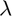
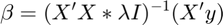
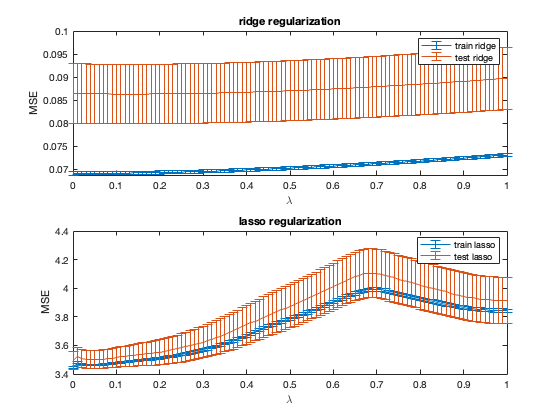

clear; close all; clc;
The goal here is perform linear-regression with L1 and L2 regularization. For the penalization, we can have a range of  's (the penalization parameters). First the data is split into train and test set. A linear-regression model with either ridge regularization or lasso regularization is trained on the training set and evaluated on both train and test sets. The mse is then plotted. The goal is to choose the penalization such that the test error is minimized. The minimum of mse test is then used to compute the optimum lambdas and hence the optimum betas.
For lasso regularization, the lasso() function of MATLAB is used. For ridge-regression the close-form solution is used:

load('regress1.mat') X = [x.^0 x.^1 x.^2 x.^3 x.^4 x.^5]; % creating data matrix train_size = floor(0.95 * size(X, 1)); % 95% training size lambdas = 0:0.01:1; % range of lambdas cv_times = 1e3; % number of cross-validations % Initializing mean squared errors mse_train_ridge = zeros(cv_times, length(lambdas)); mse_test_ridge = zeros(cv_times, length(lambdas)); mse_train_lasso = zeros(cv_times, length(lambdas)); mse_test_lasso = zeros(cv_times, length(lambdas)); % Initializing betas beta_lasso_ = zeros(cv_times, size(X, 2), length(lambdas)); beta_ridge_ = zeros(cv_times, size(X, 2), length(lambdas)); for i = 1:cv_times % creating train and test sets train_indices = randperm(size(X, 1), train_size); test_indices = setdiff(1:size(X, 1), train_indices); X_train = X(train_indices, :); X_test = X(test_indices, :); y_train = y(train_indices); y_test = y(test_indices); % computing $$\beta $$ 's using LASSO regularization beta_lasso_train = lasso(X_train, y_train, 'Lambda', lambdas, ... 'Intercept', true, 'Standardize', false); beta_lasso_(i, :, :) = beta_lasso_train; for ll = 1:length(lambdas) lambda = lambdas(ll); % computing $$\beta $$ 's using Ridge regularization beta_ridge_train = (X_train' * X_train + lambda * eye(size(X_train, 2))) ... \ (X_train' * y_train); % closed-form solution of ride-regression. beta_ridge_(i, :, ll) = beta_ridge_train; % Making predictions and computing MSE for Ridge y_pred_train_ridge = X_train * beta_ridge_train; y_pred_test_ridge = X_test * beta_ridge_train; mse_train_ridge(i, ll) = mean((y_train - y_pred_train_ridge).^2); mse_test_ridge(i, ll) = mean((y_test - y_pred_test_ridge).^2); % Making predictions and computing MSE for LASSO y_pred_train_lasso = X_train * beta_lasso_train(:, ll); y_pred_test_lasso = X_test * beta_lasso_train(:, ll); mse_train_lasso(i, ll) = mean((y_train - y_pred_train_lasso).^2); mse_test_lasso(i, ll) = mean((y_test - y_pred_test_lasso).^2); end end % Computing mean MSE and standard error for train and test sets for Ridge mean_mse_train_ridge = mean(mse_train_ridge, 1); mean_mse_test_ridge = mean(mse_test_ridge, 1); stderror_mse_train_ridge = std(mse_train_ridge, 1)./sqrt(size(X, 1)); stderror_mse_test_ridge = std(mse_test_ridge, 1)./sqrt(size(X, 1)); % Computing mean MSE and standard error for train and test sets for LASSO mean_mse_train_lasso = mean(mse_train_lasso, 1); mean_mse_test_lasso = mean(mse_test_lasso, 1); stderror_mse_train_lasso = std(mse_train_lasso, 1)./sqrt(size(X, 1)); stderror_mse_test_lasso = std(mse_test_lasso, 1)./sqrt(size(X, 1));
figure() subplot(2, 1, 1) errorbar(lambdas, mean_mse_train_ridge, stderror_mse_train_ridge, ... 'DisplayName', 'train ridge') hold on; errorbar(lambdas, mean_mse_test_ridge, stderror_mse_test_ridge, ... 'DisplayName', 'test ridge') xlabel('\lambda') ylabel('MSE') title('ridge regularization') legend() subplot(2, 1, 2) errorbar(lambdas, mean_mse_train_lasso, stderror_mse_train_lasso, ... 'DisplayName', 'train lasso') hold on; errorbar(lambdas, mean_mse_test_lasso, stderror_mse_test_lasso, ... 'DisplayName', 'test lasso') xlabel('\lambda') ylabel('MSE') title('lasso regularization') legend()
Computing optimum lambdas and corresponding betas
[~, ridge_param_index] = min(mean_mse_test_ridge(2: end)); [~, lasso_param_index] = min(mean_mse_test_lasso(2: end)); ridge_lambda_optim = lambdas(ridge_param_index) lasso_lambda_optim = lambdas(lasso_param_index)
ridge_lambda_optim =
0.1200
lasso_lambda_optim =
0.0300
average beta, average MSE and error in optimum betas were computed across CVs to ensure that the obtained beta optima for ridge and lasso are not stable.
beta_ridge_train_avg = mean(beta_ridge_(:, :, ridge_param_index), 1) beta_lasso_train_avg = mean(beta_lasso_(:, :, lasso_param_index), 1) beta_ridge_train_error = std(beta_ridge_(:, :, ridge_param_index), 0, 1) beta_lasso_train_error = std(beta_lasso_(:, :, lasso_param_index), 0, 1) mean_mse_ridge_test_avg = mean(mse_train_ridge(:, ridge_param_index), 1) mean_mse_lasso_test_avg = mean(mse_train_lasso(:, lasso_param_index), 1)
beta_ridge_train_avg =
-1.8146 -1.1158 -0.1257 0.1014 0.2441 -0.0299
beta_lasso_train_avg =
0 -0.9726 0 -0.0001 0.1848 -0.0004
beta_ridge_train_error =
0.0182 0.0238 0.0407 0.0196 0.0174 0.0066
beta_lasso_train_error =
0 0.0107 0 0.0011 0.0028 0.0013
mean_mse_ridge_test_avg =
0.0692
mean_mse_lasso_test_avg =
3.4616
Computing optimum betas using the optimum lambdas computed
train_indices = randperm(size(X, 1), train_size); test_indices = setdiff(1:size(X, 1), train_indices); X_train = X(train_indices, :); X_test = X(test_indices, :); y_train = y(train_indices); y_test = y(test_indices); beta_ridge_train_optim = (X_train' * X_train + ridge_lambda_optim * ... eye(size(X_train, 2))) \ (X_train' * y_train) beta_lasso_train_optim = lasso(X_train, y_train, 'Lambda', lasso_lambda_optim, ... 'Intercept', true, 'Standardize', false)
beta_ridge_train_optim =
-1.7942
-1.1216
-0.1622
0.1129
0.2561
-0.0343
beta_lasso_train_optim =
0
-0.9798
0
0
0.1840
0
We can see that there are differences in the betas optained through ridge vs lasso regularization. Also there are differences in the optimum models obtained in the lab vs in this exercise. The goal in the lab assignment was to find an optimum order of polynomial model. Here the goal is to compute the optimum penalization to the linear model of order 5. Ridge-regularization penalizes so that the model does not end up overfitting the training set. We can also see that the coefficient selected for x^5 is very small. And hence ridge regularization penalizes to select an order 5 model with a small coefficient for the 5th order variable. The lasso regularization also aims at minimizing overfit. However, it uses absolute value of weights instead of squared values used in ridge regression. Therefore, the model also acts as feature selection model. Here, the coefficients for x^0, x^2, x^3, x^5 are very small or close to 0. And hence lasso suggests that x^1 and x^4 are the most important features in capturing the data structures. Therefore, overall all three methods hint towards an order 4 polynomial to be the best fit for the data. However, there are differences in the model selected based on whether regularization is employed and if so what kind of penalization term is used.